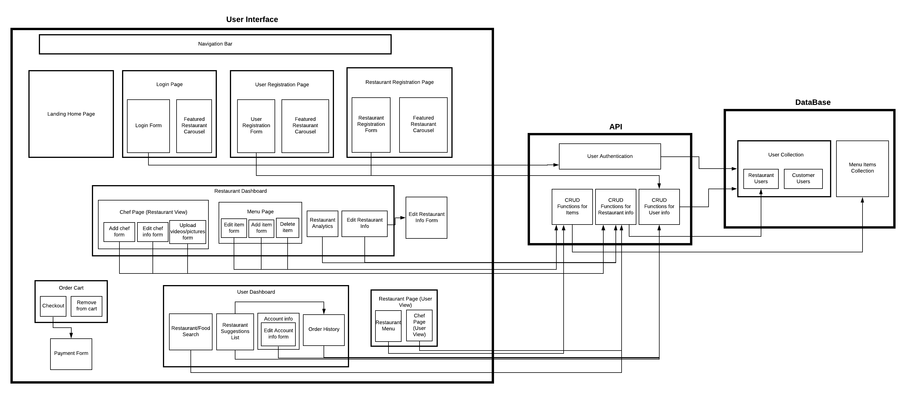
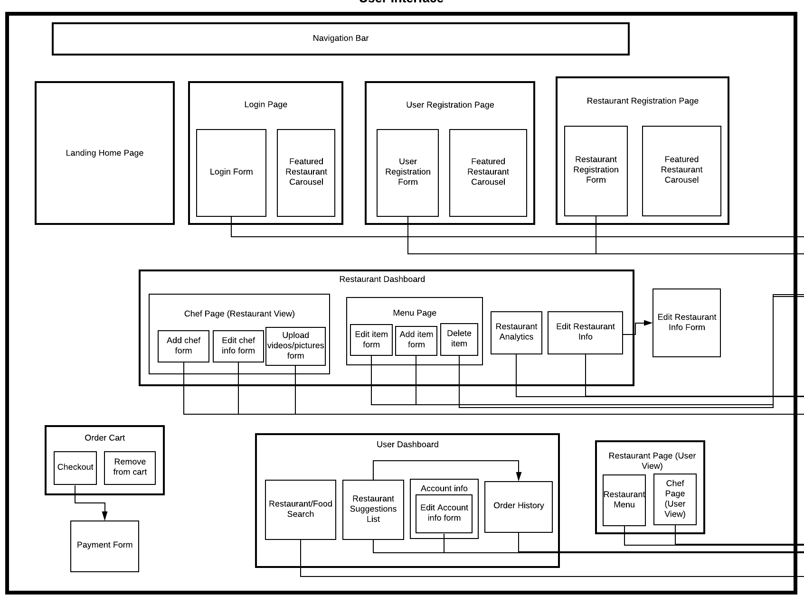
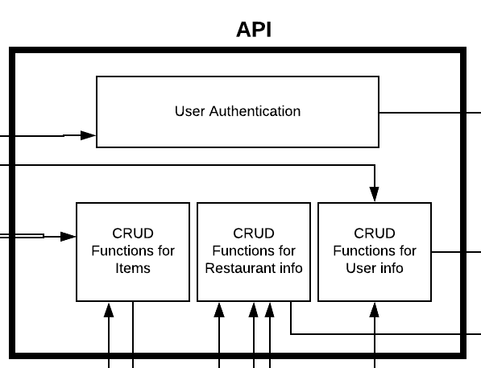
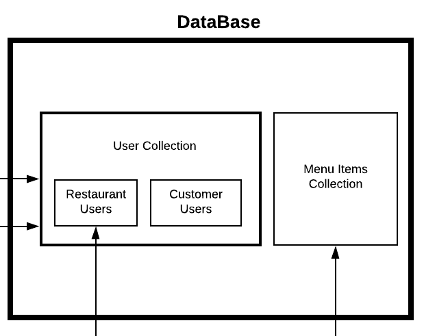

Component Descriptions
User Interface
Navigation Bar
Component responsible for the navigation throughout the website. Provides links to the Home, Login,
User registration and restaurant registration pages. It is present on all 4 of these pages and
redirects to the corresponding pages when clicked.
Landing Home Page
The first page the user will see when accessing the site. Provides information on the benefits of
the site for both users and restaurants. Also provides a button to navigate to the "About Us" for
more information.
Login Page
This page prompts users to enter their credentials to login to their account. This information is
retrieved through the login form component. This page needs to communicate to API for verification,
through the Login Form component which depends on the User Authentication component to successful
let a user log in.
User Registration Page
This page is for new customer users to sign up on the site. The information is collected through the
user registration form. This component needs to communicate with the API to store user’s information
into the database. This is done through the User Registration Form, which depends on the CRUD
Functions
for User Info component in the API.
Restaurant Registration Page
This page is for new restaurant owners to sign up their restaurants on the site, where the required
information is collected through the restaurant registration form. This component needs to
communicate with the API to store restaurant’s information into the database. This is done through
the Restaurant Registration Form, which depends on the CRUD Functions for User Info component in the
API.
User Dashboard
This page is the view the customer user sees after logging in on the site. This page shows users a
list of restaurants and lets them filter and search for restaurants. This component needs to
communicate to API to get the restaurant suggestions list for the user. The Restaurant Suggestions
list
component depends on both the Order History component and the CRUD Functions for Restaurant Info
from
the API to produce the list of suggestions.
Restaurant Dashboard
This page is the view the user sees after logging in as a restaurant. Here the most recent
restaurant analytics are displayed. The restaurant user can navigate to the Menu Page, Chef Page,
Restaurant Analytics and Edit Restaurant Info components from here. The Menu Page contains
the functionality to add, edit and delete items, thus depending on the CRUD Functions for Items
component. The remaining inner components of Restaurant Dashboard depend on the CRUD Functions for
Restaurant Info to display and edit the restaurant’s info.
Edit Restaurant Info Form
This form is for restaurant owners to edit information about their restaurant. The Edit Restaurant
Info
component depends on this to retrieve information from the user to send to the API.
Order Cart
This is a list of items from a restaurant’s menu, which contains the items a customer user is trying
to order. It should have checkout button and cancel order/item button.
Restaurant Page (User View)
This is the page that the user sees when they select a restaurant from their search results. It
includes the menu which is generated by the API reading the restaurants items from the database
through the CRUD Functions for Items Component. In this page, the user can also view the chef’s
pages which are generated by getting the information from the CRUD Functions for Restaurant Info
component.
Order History
This page shows the history of the orders a customer user has placed in the past. This component
needs to communicate to the API's CRUD Functions for User Info component in order to get the
order history.
Payment Form
This page is shown to the customer user once an order has been checked out. This lets the user
select an option to either pay by cash or pay by card.
Chef Page
This page shows a list of chefs in the database. This component needs to communicate to the API,
through
the CRUD Functions for Restaurant Info component in order to read chef data from the database.
Edit chef page form
This form is for chef users to edit information about themselves and add more dishes. This component
needs to communicate to API, through the CRUD Functions for Restaurant Info component to change the
information in the database.
Upload videos/pictures form
This form is for chef users to add pictures and videos to their profile. This component needs to
communicate to API, through the CRUD Functions for Restaurant Info component to edit information
in the database.
Menu Page
This page is shown once a customer user selects a restaurant to order food from. This component is
dependent on API' CRUD Functions for Items component to display the menu items for the restaurant.
Edit item form
This form is shown once a restaurant user selects to edit information in the menu of their
restaurant. This component is dependent on API's CRUD Functions for Items component to change
information in the database.
Add item form
This form is shown once a new restaurant user selects to add information in the menu of
their restaurant. This component is dependent on API's CRUD Functions for Items component
to add the item information to the database.
API
User Authentication
This authentication is for verifying user credentials (username, password). This is dependent on the
database's User Collection to verify information.
CRUD Functions for Items
This component is responsible to create,update and remove menu items for a restaurant. This
component makes changes in the database's Item Collection.
CRUD Functions for Restaurant info
This component is responsible to edit restaurant’s information. This component makes changes in the
database's Restaurant Users component.
CRUD Functions for User info
This component is responsible to edit user’s information. This component makes changes in the
database's User Collection.
Database
User Collection
This collection is for storing user’s information. The fields stored are determined by the role of
the user (customer or restaurant).
Menu Items Collection
This collection is for storing restaurant menus.

 The full updated product backlog can be found in excel format on our
The full updated product backlog can be found in excel format on our